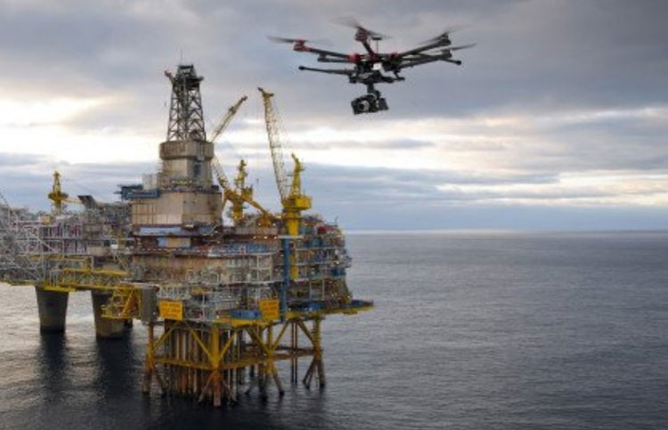

В нефтегазовой отрасли Казахстан использует дроны для помощи в разведке и добыче. Дроны, оснащенные различными датчиками и камерами, могут использоваться для обследования и картографирования местности, обнаружения и оценки запасов, наблюдения за производственными площадками.
Например, дроны можно использовать для сбора данных о геологических образованиях, обнаружения газовых и нефтяных месторождений, а также наблюдения за буровыми площадками на предмет воздействия на окружающую среду. Они также могут предоставлять информацию в режиме реального времени о производительности скважин, производительности оборудования и целостности трубопровода.
Использование дронов в нефтегазовой отрасли Казахстана помогает компаниям повысить свою операционную эффективность и сократить расходы за счет сокращения необходимости ручного контроля и обеспечения более быстрого и точного сбора данных. Кроме того, использование дронов в опасных или труднодоступных местах может повысить безопасность и снизить риски, связанные с досмотром человеком.
В целом внедрение дронов в нефтегазовую отрасль Казахстана является положительным моментом, поскольку позволяет компаниям оптимизировать свою деятельность и более эффективно использовать свои ресурсы.
Дроны в горнодобывающей промышленности
Беспилотный летательный аппарат или БПЛА, оснащенный тепловизором или оптическим газоанализатором, полезен в системах выше по течению, в средней инфраструктуре и на объектах ниже по течению, где он может быстро и безопасно выявлять проблемные области или недостатки.

Эксплуатация дронов в горнодобывающей промышленности
Беспилотный летательный аппарат или БПЛА, оснащенный тепловизором или оптическим газоанализатором, полезен в системах выше по течению, в средней инфраструктуре и на объектах ниже по течению, где он может быстро и безопасно выявлять проблемные области или недостатки. (Viper Drones, 2017)